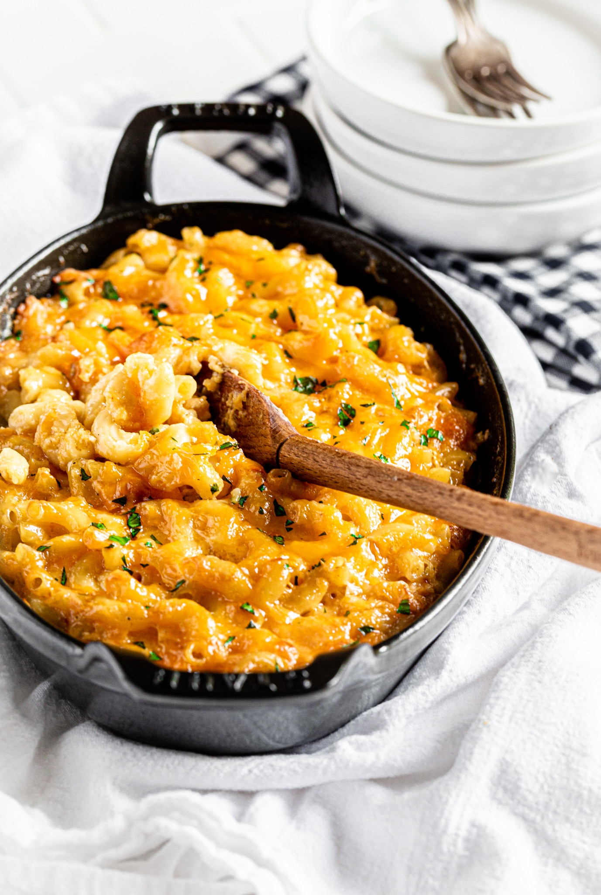

<h1>MacNCheese</h1>

<ul>
<li>8 Ounces uncooked elbow macaroni</li>
<li>2 Cups shredded sharp cheddar cheese</li>
<li>1/2 Cup grated parmesan cheese</li>
<li>3 Cups of milk</li>
<li>1/4 Cup butter</li>
<li>2 1/2 Tablespoons all-purpose flour</li>
<li>2 Tablespoons butter</li>
<li>1/2 Cup breaded crumbs</li>
<li> 1 Pinch paprika</li>
</ul>
